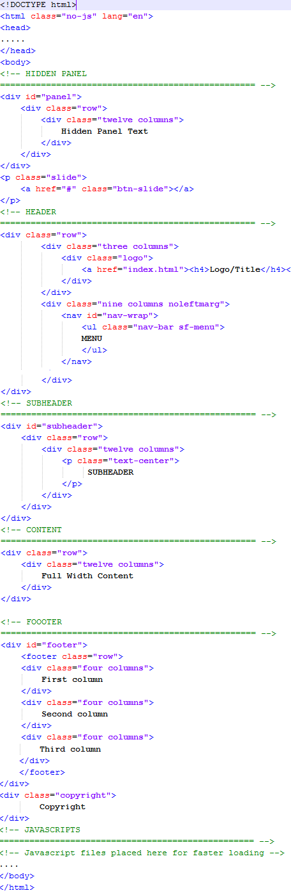
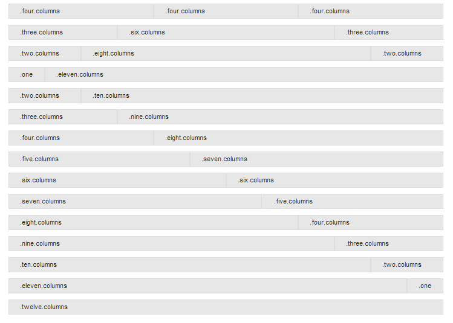

Studio Francesca
Responsive HTML Theme
- Do not use other version than the official one !
- By: WowThemes.net
- License: Details
- Contact: wowthemesnet@gmail.com
Thank you for downloading our free theme.
Looking for more free themes and templates? Click here.
The WordPress version is available here.
HTML Structure
The grid is built around two key elements: rows and columns. Rows create a max-width and contain the columns; columns create the actual structure. For layouts to work properly, always put your page content inside a row and a column.
What you need to know is that columns don't have a fixed width. They can vary based on the resolution of the screen, or the size of the window.
The main structure of our theme is:

Each column block is sized based on how many of the 12 columns it takes up. Example of main content + sidebar layout:
Main content hereSidebar here
Our document "columns.html" is useful if you want to see more of these 12 columns variations.

CSS Files and Structure
I'm using three main CSS files in this theme.
- style.css - main css files (included reset styles);
- teal.css - the default skin for this theme.
- responsive.css - stylesheet for responsive layout.
In order to change the accent color of the template, replace teal.css in all of our html documents with the skin color of your choice from stylesheets/skins/.
Example,if you choose the green skin, replace:
withstyle.css file contains all of the specific stylings for the page. The file is separated into sections using:
JavaScript
This theme imports several Javascript files, treated separately in our documentation according to the function they're serving.
foundation.min.jsjquery.easing.1.3.js
elasticslideshow.js
jquery.carouFredSel-6.0.5-packed.js
jquery.cycle.js"
app.js
modernizr.foundation.js
slidepanel.js
scrolltotop.js
hoverIntent.js
superfish.js
responsivemenu.js
formvalidation.js
Elastic Slideshow
It is the main slider of this theme, placed in index.html document. It uses the homepage.css stylesheet and the javascript files: jquery.easing.1.3.js and elasticslideshow.js. (make sure it is called if you are using it outside the home pages)
Structure of this slideshow: two lists, one for the main slider and one for the thumbnail navigation beneath the large image. The large slider list contains the image and a title with an h2 and h3 element. The list for the thumbnail contains absolute element (the first list element with the class ei-slider-element and the thumbnail list elements which consist of an anchor and an image (the thumbnail).
So for each image you want to add, follow this structure:

Responsive
Design
- ...
- Slide 1
- ...
Replace lines 4 & 16 with your own image path. In my theme I have used placeholders.
Nivo Slider
It is the boxed slider of this theme, placed in index2.html and portofoliodetail.html documents.
Extremly easy to manage, all you have to do is follow the structure:


Replace lines 2, 3 & 4 with your own image paths.
Carousel
In our theme the carousel plugin is used in home pages, for clients' logo display, but you may use it of course in any way you like.
Javascript: jquery.carouFredSel-6.0.5-packed.js (make sure it is called if you are using it outside these pages)
Stylesheet: homepage.css
To add images in carousel, follow the structure:


Replace lines 3, 4, 5, 6 & 7 with your own image paths.
Testimonials
In our theme, testimonials are displayed in homepages and services.html.
Javascript: jquery.cycle.js (make sure it is called if you are using it outside these pages)
To add a testimonial, or any other content you like, follow the structure:
Content here –By author
Another content here –By someonelse
Portofolio & Gallery
The default style.css includes the stylesheet for portofolio, while the gallery has an extra stylesheet prettyphoto.css. So if you want to use these plugins outside their main documents (portofolios), make sure you include the right stylesheet and javascripts.
Javascripts:
jquery.isotope.min.js for filterable portofoliojquery.prettyPhoto.js for gallery. The gallery link is displayed on hover (portofolio images)
custom.js for both
2 COLUMNS PORTOFOLIO STRUCTURE: (see explanation after code)
STEP A.
Notice "nature", "trains", "castle" from lines 7,8,9. These are categories. Replace them with your own and add some more if needed.
STEP B.
Line 17, after "category", include the category(or categories) in which you want this image displayed. Example:"six columns category trains nature". So, I have just included two cateories:trains and nature.
STEP C.
Line 24, replace images/yourimage1.jpg with your own image path.
STEP D.
Line 30, replace portofoliodetail.html with the path (link) to the detailed project document.
STEP E.
Line 34, repeat the third step, so replace images/yourimage1.jpg with your own image path.
3 COLUMNS PORTOFOLIO STRUCTURE: (see explanation after code)
STEP A.
Notice "nature", "trains", "castle" from lines 7,8,9. These are categories. Replace them with your own and add some more if needed.
STEP B.
Line 18, after "category", include the category(or categories) in which you want this image displayed. Example:"six columns category trains nature". So, I have just included two cateories:trains and nature.
STEP C.
Line 25, replace images/yourimage1.jpg with your own image path.
STEP D.
Line 30, replace portofoliodetail.html with the path (link) to the detailed project document.
STEP E.
Line 34, repeat the third step, so replace images/yourimage1.jpg with your own image path.
4 COLUMNS PORTOFOLIO STRUCTURE: (see explanation after code)
STEP A.
Notice "nature", "trains", "castle" from lines 7,8,9. These are categories. Replace them with your own and add some more if needed.STEP B.
Line 18, after "category", include the category(or categories) in which you want this image displayed. Example:"six columns category trains nature". So, I have just included two cateories:trains and nature.STEP C.
Line 25, replace images/yourimage1.jpg with your own image path.STEP D.
Line 29, replace portofoliodetail.html with the path (link) to the detailed project document.STEP E.
Line 33, repeat the third step, so replace images/yourimage1.jpg with your own image path.Pay attention to image and thumbs path locations, in my themes I have used placeholders.
Contact Forms
I've used the same contact form twice in 2 different pages: contact.html and services.html. Just find the following line in contact.php file (23 if you're using Notepad++ editor) and replace the existing e-mail address with your own.$to = 'wowthemesnet@gmail.com';Sources and Credits
I've used the following images, icons or other files as listed. I do not own any credits for it.
- Font Awesome Icons
- Foundation Framework
Join our Community
Once again thank you for downloading our theme.
If you like our premium themes from Wow Themes Shop , recommend us and earn 30% of each sale you generate.
Click here to join the affiliates community.